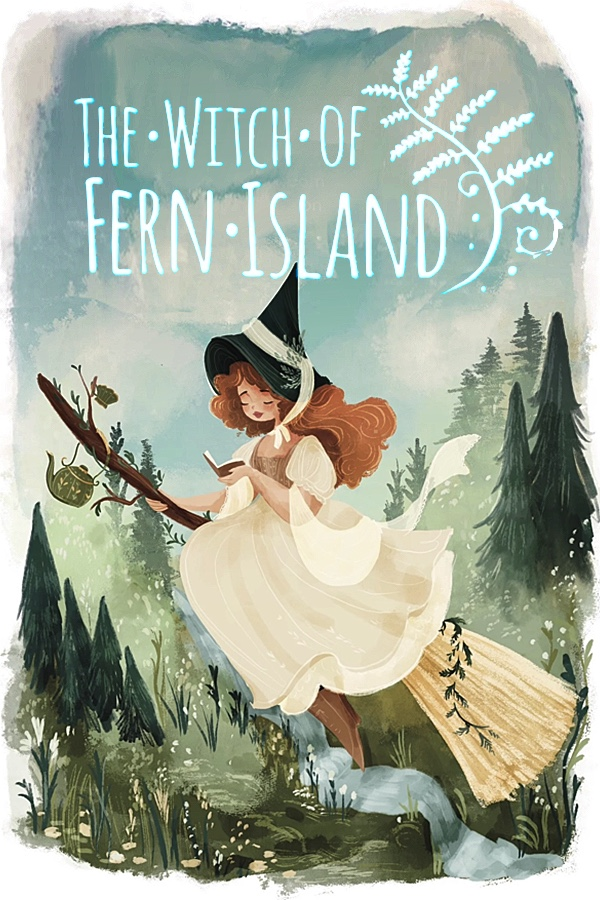

The Witch of Fern Island
The Witch of Fern Island
Details
|  | |
| Playtime | Not Played |
| Last Activity | Never |
| Added | 5/06/2025 3:25:11 |
| Modified | 7/06/2025 19:27:31 |
| Completion Status | Not Played |
| Library | Steam |
| Source | Steam |
| Platform | PC (Windows) |
| Release Date | |
| Community Score | |
| Critic Score | |
| User Score | |
| Genre | Adventure Casual Indie RPG Simulation |
| Developer | |
| Publisher | |
| Feature | Achievements Cloud Saves Family Sharing Partial Controller Support Single-Player |
| Links | Community Hub Discussions Guides News Store Page PCGamingWiki Achievements |
| Tag | Adventure Building Casual Choose Your Own Adventure Crowdfunded Cute Exploration Farming Sim Female Protagonist Flight Hidden Object Immersive Sim Life Sim Lore-Rich Magic Open World Sandbox Simulation Stylized Third Person |
Description

Welcome to the mysterious Fern Island! The unfortunate accident that brought you here has become an opportunity for a change of plans. Before you lies the mysterious mansion of the former witch, available for you to take care of, along with an adjacent field.
To earn money, you must sell the witch's products: potions, talismans, and handicrafts. Who will buy them? The inhabitants of the nearby village! Become a part of the friendly community of Barrow End. Get to know lively people with real problems, many of which can only be solved by witchcraft.
Immerse yourself in the peaceful life of a witch: making elixirs, farming, decorating the mansion. Your new life will be filled with magic and great mysteries, waiting to be discovered at every turn. All you have to do is set out on the journey!
Explore the Island
Discover a vast, open world full of diverse biomes: Steppes, a Sacred Grove, a Desert, Magical Marshes, Cliffs, Wreck Bay, and much more.
Traverse the wilderness on a mount, fly over the hills on a magical broom, teleport between portals, or possess a cat to get into the deepest corners from its perspective.
Find and collect hundreds of different ingredients, recipes, and interesting items.
Discover diverse, magical fauna, or catch some of of varied magical fish!
Commemorate your discoveries by taking pictures with the camera!

Discover the Mystery
Fulfill the task set before you by the island's divine guardians!
Solve magical puzzles and uncover hidden places.
Find clues in the depths of the forgotten cellar in your home.
Combine the mysterious fragments scattered all around the island and piece together the story of the previous witches, which dates back to the myths of the ancient Kaoh culture!
Become an archaeologist: excavate ancient artifacts and donate them to the Barrow End museum!

Become a Witch
Brew potions in a talking cauldron!
Perform magical rituals at the stone altar to improve your skills, protect your crops, or allow you to communicate with the Witch Academy.
Create magical amulets that enhance your abilities.
Extract magical essence using an extractor.
Pass through the gate to the spiritual dimension of Astra and explore the world's unknown side!
Complete magical rites with a crystal ball and become a graduate of the Blackthorn Manor!

Take Care of Your Farm
The passage of time changes the environment with every season.
Grow vegetables, herbs, and mushrooms.
Plan your activities to grow the best quality plants, equip a high-quality sickle, and observe the phases of the moon!
Saturate your crops with essence to reveal their magical varieties!
Raise extraordinary animals: the mischievous Cuflows and the dignified Tzoru, or create new breeds!
Get yourself a helper: a magical scarecrow!

Build Lasting Relationships
Become a citizen of Barrow End and gain recognition among the inhabitants.
Experience the cultures, traditions and beliefs of the Boran, Apatut, and Kuqkwa, and take part in their rituals and festivals.
Spend time with the locals and get to know their history and interests more intimately.
Extend a caring hand to help them with their problems and make lasting, positive changes in their lives.

Express Yourself
Buy or sew and dye a witch's outfit to suit your tastes!
Choose your favorite hairstyle and express yourself!
Furnish your mansion with dozens of furniture options!
Choose your favorite farm decorations and make it a unique place!